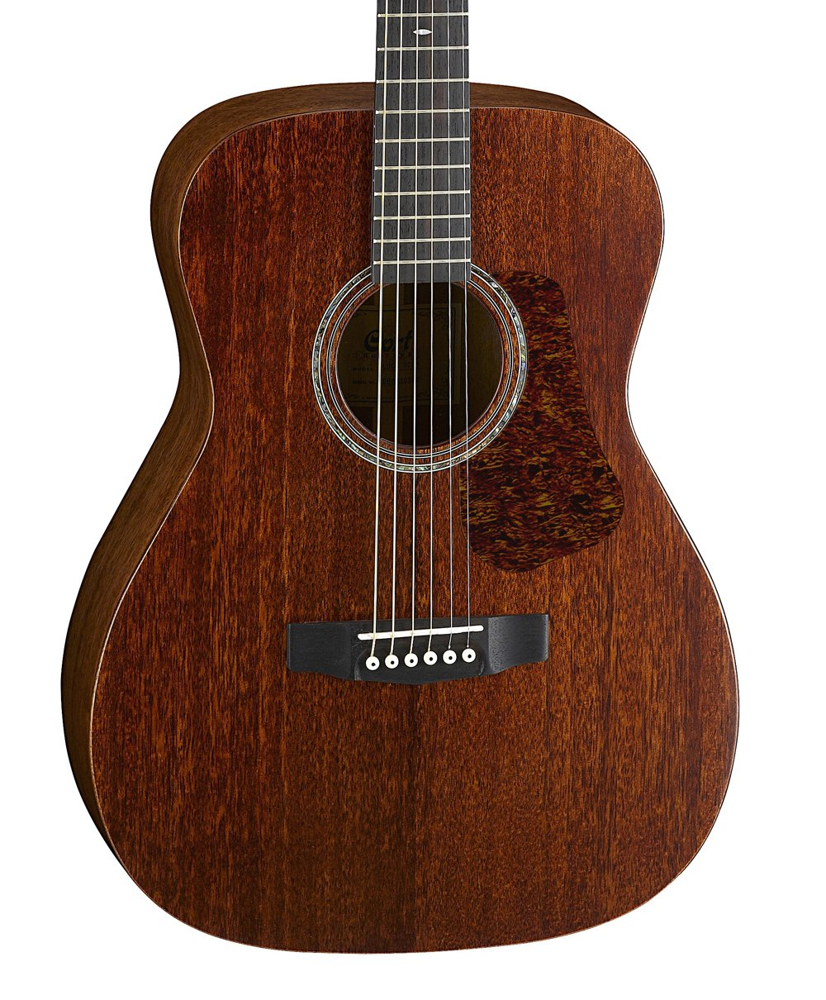
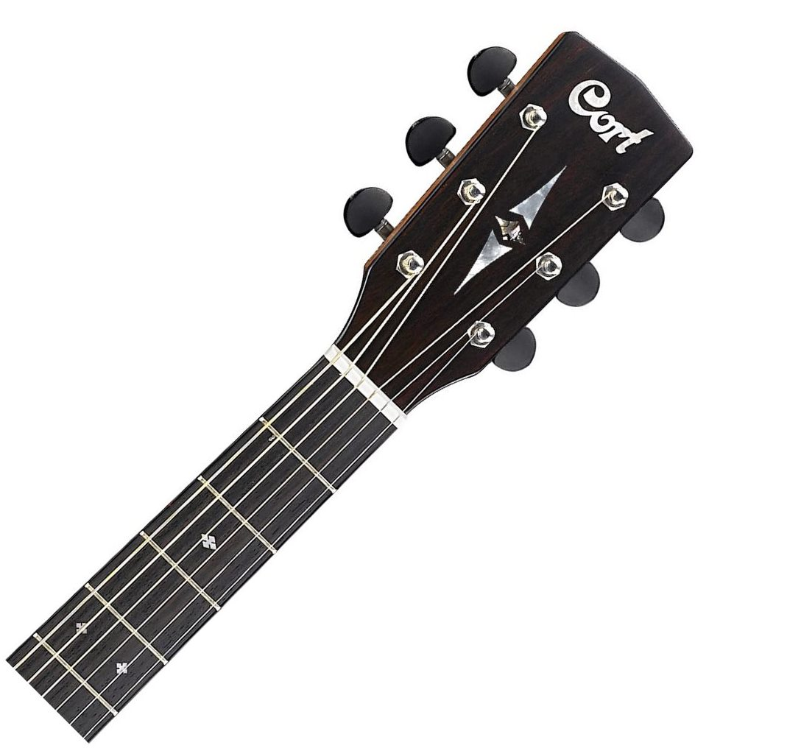

Cort L450CL-NS Luce Series
Цена: 39 670 руб.
В качестве альтернативы популярному корпусу дредноут, серия гитар Luce предлагает более компактные формы корпуса, такие как концертный и парлор, которые проще держать в руках, на них легче играть, а звучание таких гитар более сбалансировано. Идеальный баланс между винтажным внешним видом гитар золотого века и современными функциями, гитары Luce Series обеспечивают лучшее из обоих миров в полной гармонии.
Характеристики
- Количество ладов (диапазон): 20
- Количество струн: 6
- Материал грифа: красное дерево